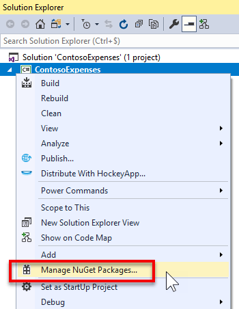
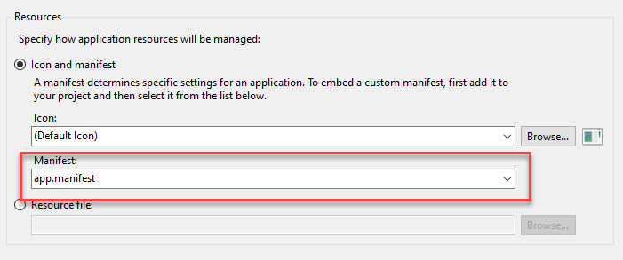
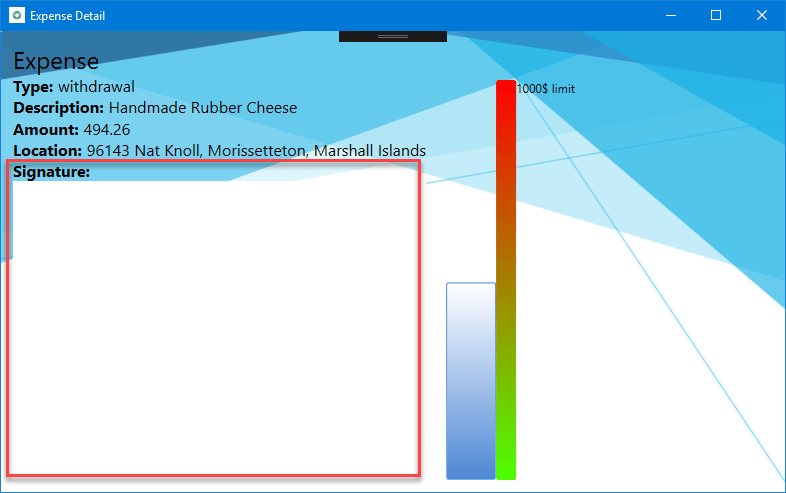
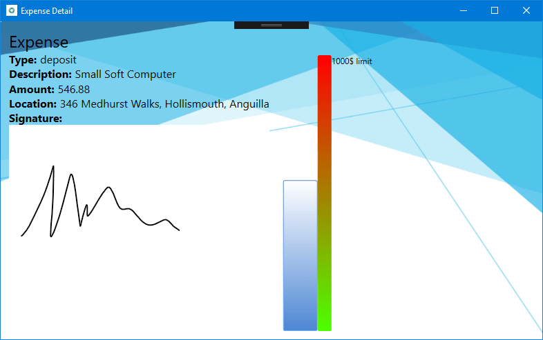

Part 2: Add a UWP InkCanvas control using XAML Islands
This is the second part of a tutorial that demonstrates how to modernize a sample WPF desktop app named Contoso Expenses. For an overview of the tutorial, prerequisites, and instructions for downloading the sample app, see Tutorial: Modernize a WPF app. This article assumes you have already completed part 1.
In the fictional scenario of this tutorial, the Contoso development team wants to add support for digital signatures to the Contoso Expenses app. The UWP InkCanvas control is a great option for this scenario, because it supports digital ink and AI-powered features like the capability to recognize text and shapes. To do this, you will use the InkCanvas wrapped UWP control available in the Windows Community Toolkit. This control wraps the interface and functionality of the UWP InkCanvas control for use in a WPF app. For more details about wrapped UWP controls, see Host UWP XAML controls in desktop apps (XAML Islands).
Configure the project to use XAML Islands
Before you can add an InkCanvas control to the Contoso Expenses app, you first need to configure the project to support UWP XAML Islands.
In Visual Studio 2019, right-click on the ContosoExpenses.Core project in Solution Explorer and choose Manage NuGet Packages.

In the NuGet Package Manager window, click Browse. Search for the
Microsoft.Toolkit.Wpf.UI.Controlspackage and install version 6.0.0 or a later version.Note
This package contains all the necessary infrastructure for hosting UWP XAML Islands in a WPF app, including the InkCanvas wrapped UWP control. A similar package named
Microsoft.Toolkit.Forms.UI.Controlsis available for Windows Forms apps.Right-click ContosoExpenses.Core project in Solution Explorer and choose Add -> New item.
Select Application Manifest File, name it app.manifest, and click Add. For more information about application manifests, see this article.
In the manifest file, uncomment the following
<supportedOS>element for Windows 10.<!-- Windows 10 --> <supportedOS Id="{8e0f7a12-bfb3-4fe8-b9a5-48fd50a15a9a}" />In the manifest file, locate the following commented
<application>element.<!-- <application xmlns="urn:schemas-microsoft-com:asm.v3"> <windowsSettings> <dpiAware xmlns="http://schemas.microsoft.com/SMI/2005/WindowsSettings">true</dpiAware> </windowsSettings> </application> -->Delete this section and replace it with the following XML. This configures the app to be DPI aware and better handle different scaling factors supported by Windows 10.
<application xmlns="urn:schemas-microsoft-com:asm.v3"> <windowsSettings> <dpiAware xmlns="http://schemas.microsoft.com/SMI/2005/WindowsSettings">true/PM</dpiAware> <dpiAwareness xmlns="http://schemas.microsoft.com/SMI/2016/WindowsSettings">PerMonitorV2, PerMonitor</dpiAwareness> </windowsSettings> </application>Save and close the
app.manifestfile.In Solution Explorer, right-click the ContosoExpenses.Core project and choose Properties.
In the Resources section of the Application tab, make sure the Manifest dropdown is set to app.manifest.

Save the changes to the project properties.
Add an InkCanvas control to the app
Now that you have configured your project to use UWP XAML Islands, you are now ready to add an InkCanvas wrapped UWP control to the app.
In Solution Explorer, expand the Views folder of the ContosoExpenses.Core project and double-click the ExpenseDetail.xaml file.
In the Window element near the top of the XAML file, add the following attribute. This references the XAML namespace for the InkCanvas wrapped UWP control.
xmlns:toolkit="clr-namespace:Microsoft.Toolkit.Wpf.UI.Controls;assembly=Microsoft.Toolkit.Wpf.UI.Controls"After adding this attribute, the Window element should now look like this.
<Window x:Class="ContosoExpenses.Views.ExpenseDetail" xmlns="http://schemas.microsoft.com/winfx/2006/xaml/presentation" xmlns:x="http://schemas.microsoft.com/winfx/2006/xaml" xmlns:d="http://schemas.microsoft.com/expression/blend/2008" xmlns:mc="http://schemas.openxmlformats.org/markup-compatibility/2006" xmlns:toolkit="clr-namespace:Microsoft.Toolkit.Wpf.UI.Controls;assembly=Microsoft.Toolkit.Wpf.UI.Controls" xmlns:converters="clr-namespace:ContosoExpenses.Converters" DataContext="{Binding Source={StaticResource ViewModelLocator}, Path=ExpensesDetailViewModel}" xmlns:local="clr-namespace:ContosoExpenses" mc:Ignorable="d" Title="Expense Detail" Height="500" Width="800" Background="{StaticResource HorizontalBackground}">In the ExpenseDetail.xaml file, locate the closing
</Grid>tag that immediately precedes the<!-- Chart -->comment. Add the following XAML just before the closing</Grid>tag. This XAML adds an InkCanvas control (prefixed by the toolkit keyword you defined earlier as a namespace) and a simple TextBlock that acts as a header for the control.<TextBlock Text="Signature:" FontSize="16" FontWeight="Bold" Grid.Row="5" /> <toolkit:InkCanvas x:Name="Signature" Grid.Row="6" />Save the ExpenseDetail.xaml file.
Press F5 to run the app in the debugger.
Choose an employee from the list and then choose one of the available expenses. Notice that the expense detail page contains space for the InkCanvas control.

If you have a device which supports a digital pen, like a Surface, and you're running this lab on a physical machine, go on and try to use it. You will see the digital ink appearing on the screen. However, if you don't have a pen capable device and you try to sign with your mouse, nothing will happen. This is happening because the InkCanvas control is enabled only for digital pens by default. However, we can change this behavior.
Close the app and double-click the ExpenseDetail.xaml.cs file under the Views folder of the ContosoExpenses.Core project.
Add the following namespace declaration at the top of the class:
using Microsoft.Toolkit.Win32.UI.Controls.Interop.WinRT;Locate the
ExpenseDetail()constructor.Add the following line of code after the
InitializeComponent()method and save the code file.Signature.InkPresenter.InputDeviceTypes = CoreInputDeviceTypes.Mouse | CoreInputDeviceTypes.Pen;You can use the InkPresenter object to customize the default inking experience. This code uses the InputDeviceTypes property to enable mouse as well as pen input.
Press F5 again to rebuild and run the app in the debugger. Choose an employee from the list and then choose one of the available expenses.
Try now to draw something in the signature space with the mouse. This time, you'll see the ink appearing on the screen.

Next steps
At this point in the tutorial, you have successfully added a UWP InkCanvas control to the Contoso Expenses app. You are now ready for Part 3: Add a UWP CalendarView control using XAML Islands.